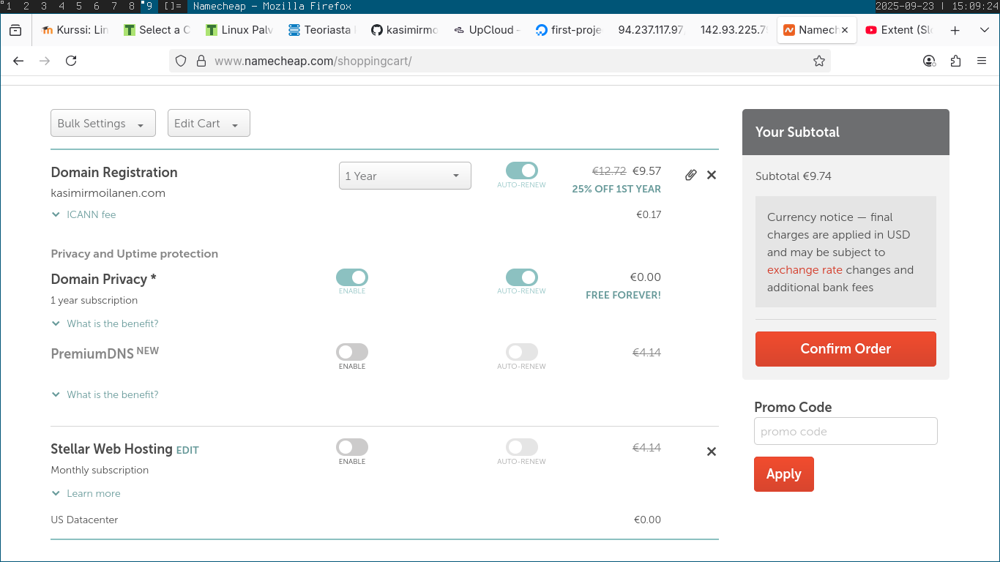
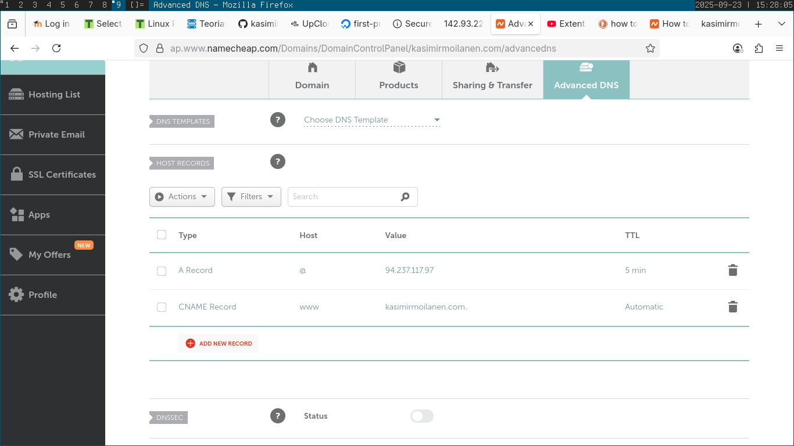
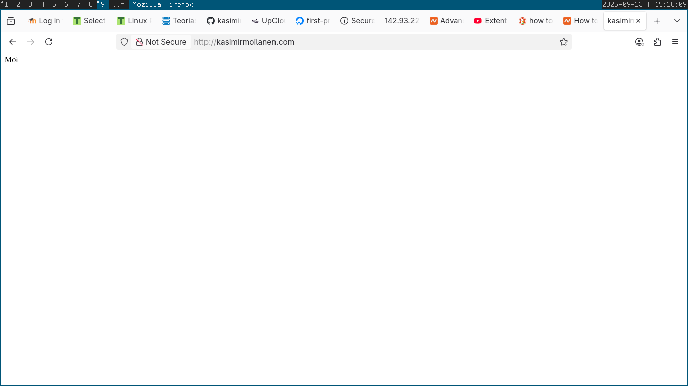
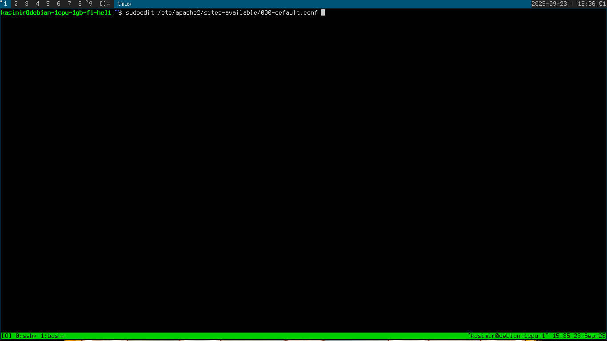
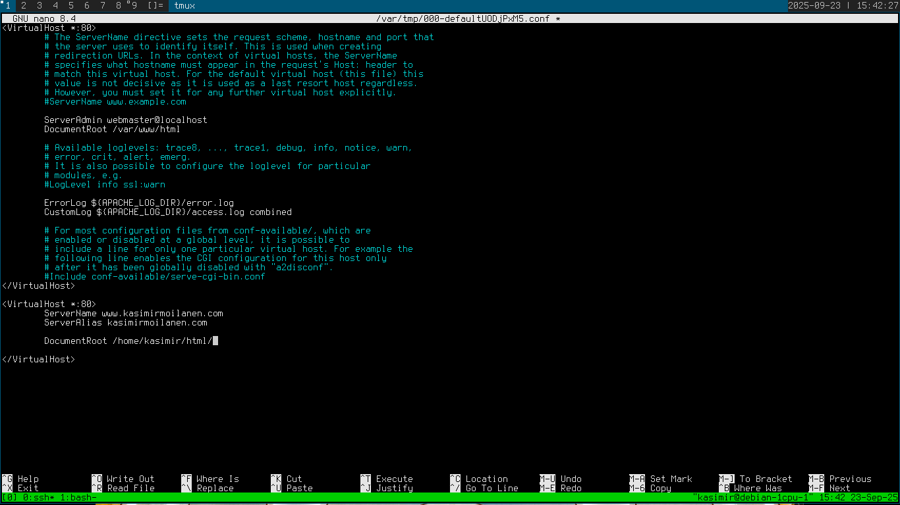
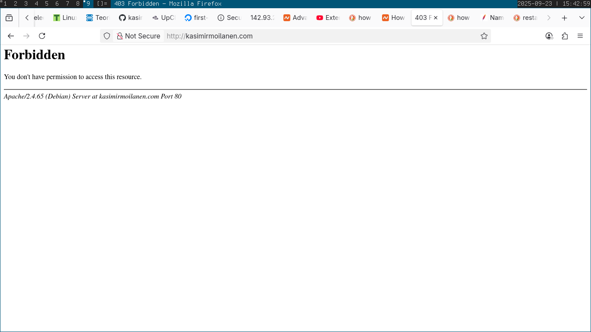
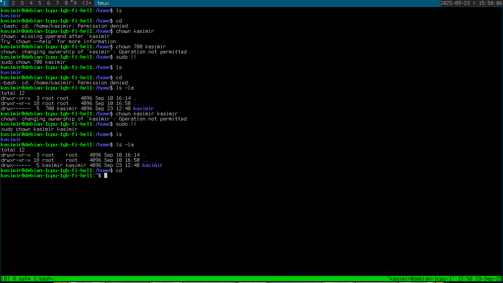
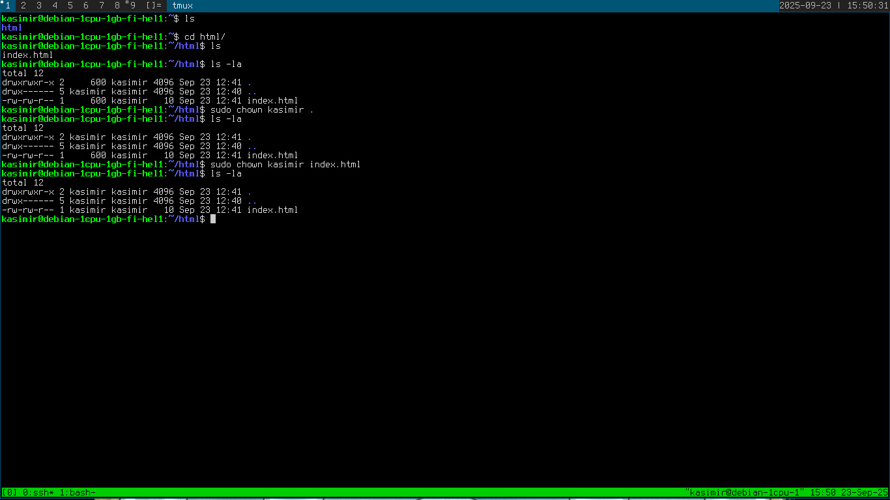
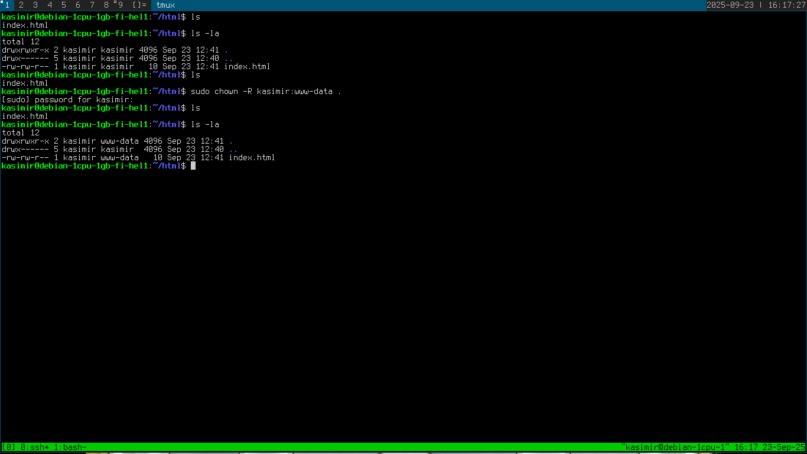
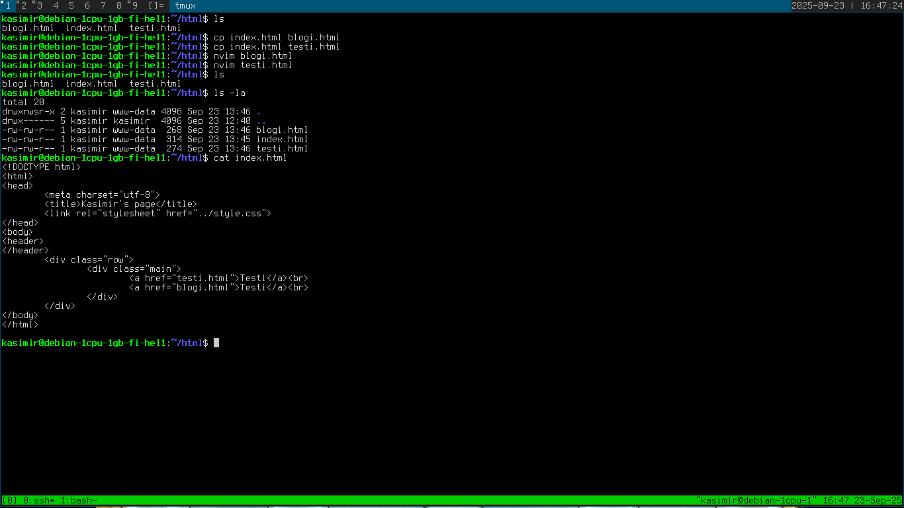

Aluksi ostin domain-nimen namecheapistä:
Seuraavaksi lisäsin A-recordin ja CNAME-recordin:
Sivu toimi uudella domain-nimellä!
Seuraavaksi editoin apache2 konfigurointitiedostoa:
 Käynnistin apachen uudelleen komennolla sudo systemctl restart apache2
Sivu lakkasi toimimasta, todennäköisesti hakemistossa ja tiedostoissa olevien oikeuksien takia:
Yritin venkslata jotain käyttöoikeuksien kanssa mutta ei siitä oikein mitään tullut:
  Päätin jatkaa sivujen muokkaamiseen tässä vaiheessa, kun tuntui ettei osaaminen ja aika riittänyt.
En kuitenkaan saanut sivuja näkyviin uudella domainilla.
Olisi varmaan pitänyt aikaisemmin aloittaa läksyjen teko, niin olisin useampana päivänä ehtinyt tutkia ratkaisuja ongelmiin. Mutta näin pitkälle pääsin.
Lähteet:
Lehto, Susanna 2022 Teoriasta käytäntöön pilvipalvelimen avulla https://susannalehto.fi/2022/teoriasta-kaytantoon-pilvipalvelimen-avulla-h4/
Namecheap, Artikkeli: How to Connect a Domain to a Server or Hosting https://www.namecheap.com/support/knowledgebase/article.aspx/9837/46/how-to-connect-a-domain-to-a-server-or-hosting/
Apache, Artikkeli: Name-based Virtual Host Support https://httpd.apache.org/docs/2.4/vhosts/name-based.html
Uptimia, How To Allow Apache And User To Write To A Directory? https://www.uptimia.com/questions/how-to-allow-apache-and-user-to-write-to-a-directory